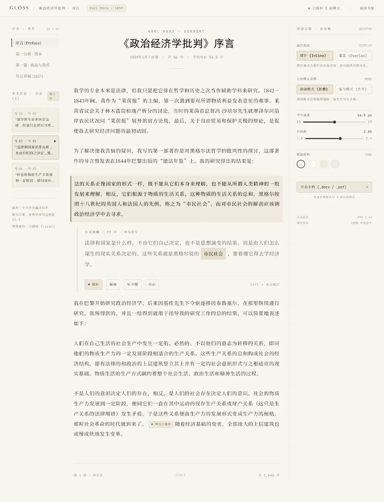
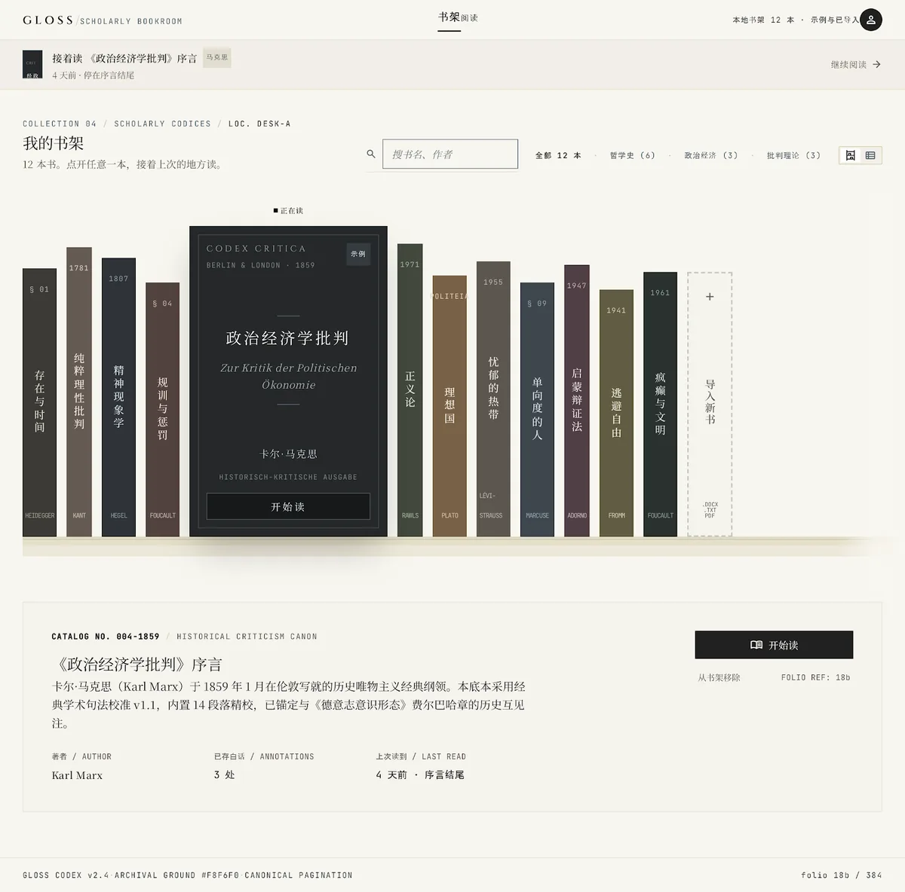

01
点一句读不懂的话，就地把它讲成白话
读难书，最难的不是查不到，是每查一次都要离开这一页。Gloss 把「选中 → 切出去 → 搜索 → 对照 → 切回来」压成一次点击：点句子，就地撑开一句白话，不打断阅读。
236条真实批注
5次PRD迭代
20句分层评测集


读难书，最难的不是查不到，是每查一次都要离开这一页。Gloss 把「选中 → 切出去 → 搜索 → 对照 → 切回来」压成一次点击：点句子，就地撑开一句白话，不打断阅读。

备考时能记住，却无法验证自己是不是真的理解、内化了——问题出在「只有输入、没有反馈」。费曼把方向反过来：用户复述，AI 只负责追问，思考空间留给你自己。
读完整案例 →